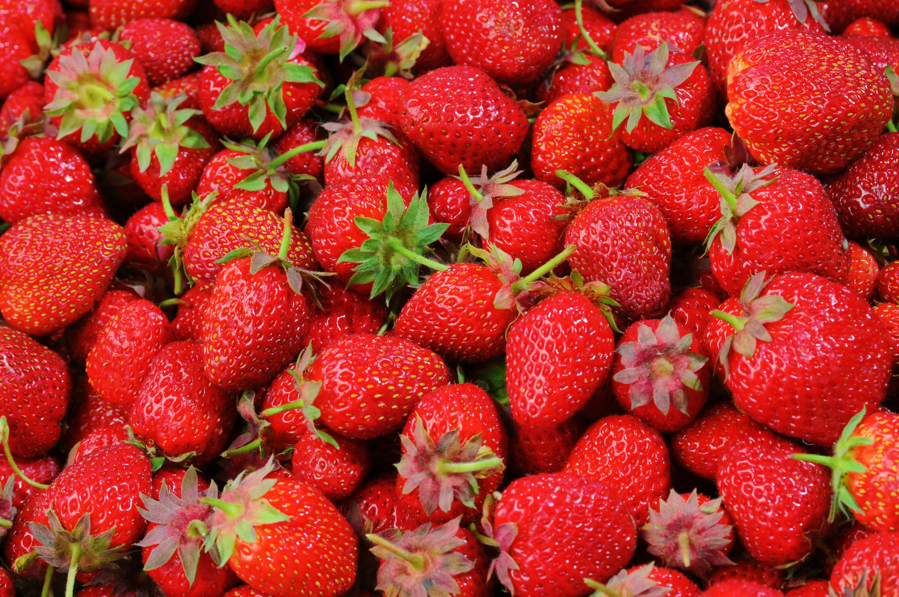

Some random information.

Apples are a delicious fruit that grow on trees and come in many colors! They're a great choice for a classic pie.

Kiwis also grow on trees but primarily come in green or sometimes gold. They make a great topper for many cakes, adding a fresh fruity sweetness.

Oranges are another tree-grown fruit that are incredibly versatile. Hint: they go great in chocolate desserts!
Strawberries are incredibly simple to grow and tasty to boot! They grow on a collection of many vine-like strands covering the ground.